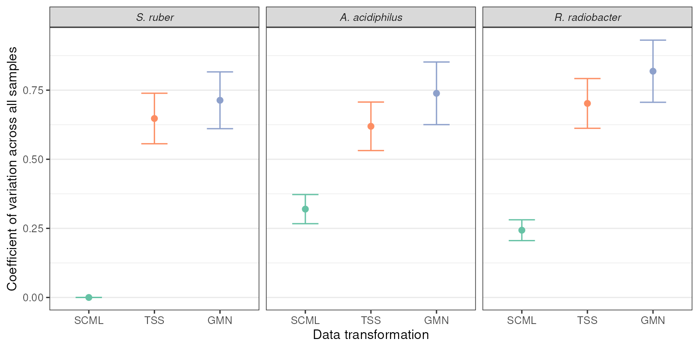
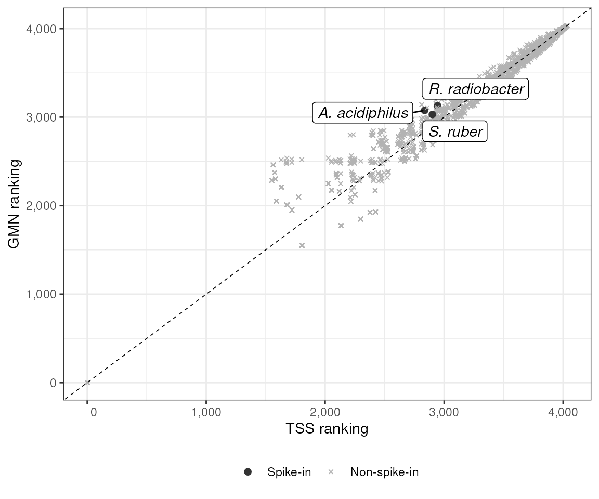
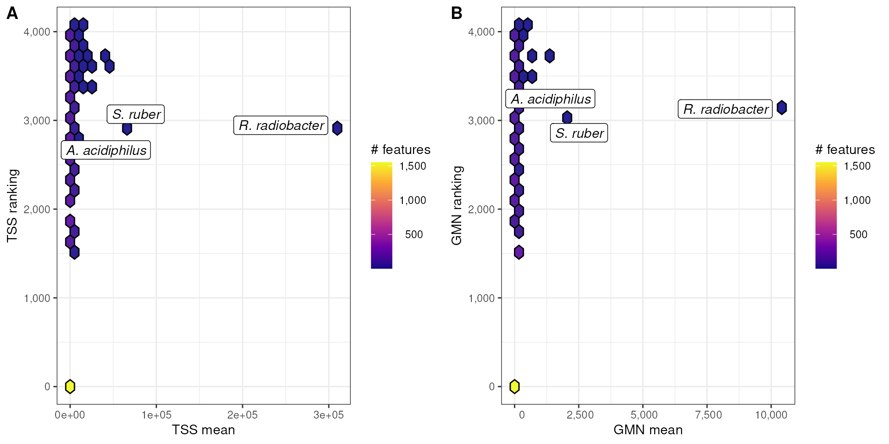

vignettes/articles/Stammler_2016_16S_spikein.Rmd
Stammler_2016_16S_spikein.Rmd
library(MicrobiomeBenchmarkDataAnalyses)
library(MicrobiomeBenchmarkData)
library(dplyr)
library(tibble)
library(tidyr)
library(biobroom)
library(ggplot2)
library(purrr)
library(ggrepel)
library(ggpubr)The objective of this vignette is to compare the coefficient of variation (CV) of the three spike-in bacteria in the Stammler_2016_16S_spikein dataset using relative abundance (TSS) and centered-log-ratio transformation (CLR). However, since CLR is log transformed and TSS is not, a geometric mean normalization (GMN) method will be used instead of CLR.
S. ruber will be used for re-calibrating the abundance data (counts). This is referred to as SCML. The data will also be normalized with TSS (TSS) or GMN (GMN). The CV of the abundance data of the three spike-in bacteria across samples using these two normalization methods will be calculated and compared.
tse <- getBenchmarkData('Stammler_2016_16S_spikein', dryrun = FALSE)[[1]]
spk_bac <- c(
`S. ruber` = 'AF323500XXXX',
`R. radiobacter` = 'AB247615XXXX',
`A. acidiphilus` = 'AB076660XXXX'
)
counts <- assay(tse, 'counts')
s_ruber <- counts[spk_bac['S. ruber'], ]
size_factor <- s_ruber/mean(s_ruber)
SCML_data <- counts
for(i in seq(ncol(SCML_data))){
SCML_data[,i] <- round(SCML_data[,i] / size_factor[i])
}
assay(tse, 'SCML') <- SCML_data
tss_fun <- function(x) (x + 1) / sum((x + 1)) * 1e6
# tss_fun <- function(x) (x + 1) / sum((x + 1))
# tss_fun <- function(x) log((x + 1) / sum((x + 1)))
gmn_fun <- function(x) (x + 1) / exp(mean(log((x + 1))))
# gnm_fun <- function(x) (x + 1) / prod((x + 1)^(1 / length(x)))
# gmn_fun <- function(x) log((x + 1) / exp(mean(log((x + 1)))))
assay(tse, "TSS") <- apply(assay(tse, 'counts'), 2, tss_fun)
assay(tse, "GMN") <- apply(assay(tse, 'counts'), 2, gmn_fun)
spk_bac_tse <- tse[spk_bac,]
rownames(spk_bac_tse) <- names(spk_bac)
spk_bac_tse
#> class: TreeSummarizedExperiment
#> dim: 3 17
#> metadata(0):
#> assays(4): counts SCML TSS GMN
#> rownames(3): S. ruber R. radiobacter A. acidiphilus
#> rowData names(1): taxonomy
#> colnames(17): MID26 MID27 ... MID42 MID43
#> colData names(12): dataset subject_id ... country description
#> reducedDimNames(0):
#> mainExpName: NULL
#> altExpNames(0):
#> rowLinks: NULL
#> rowTree: NULL
#> colLinks: NULL
#> colTree: NULL
data <- spk_bac_tse |>
assays() |>
names() |>
map({
~ tidy.RangedSummarizedExperiment(spk_bac_tse, assay = .x) |>
magrittr::set_colnames(c("taxon", "sample", .x))
}) |>
reduce(.f = \(.x, .y) dplyr::left_join(.x, .y, by = c("taxon", "sample")))
DT::datatable(data, filter = 'top')
get_cv <- function(x) {
cv <- function(x, n) { sd(x[n]) / abs(mean(x[n])) }
## Output is one row data.frame
boot::boot(x, cv, R = 1000) |>
broom::tidy() |>
dplyr::rename(cv = statistic)
}
cv_res <- data %>%
group_by(taxon) %>%
summarize(across(.cols = counts:last_col(), .fns = get_cv)) %>%
pivot_longer(
cols = 2:last_col(), names_to = 'norm', values_to = 'cv_res'
) %>%
unnest(cols = 'cv_res')
DT::datatable(cv_res, filter = 'top') Table in wider format:
cv_res |>
rename(
Species = taxon, `Normalization method` = norm,
CV = cv, SE = std.error
) |>
filter(`Normalization method` %in% c("GMN", "TSS")) |>
select(-bias) |>
mutate(
CV = round(CV, 2), SE = round(SE, 2)
) |>
mutate(
`Normalization method` = ifelse(
test = `Normalization method` == "TSS",
yes = "Relative abundance",
no = `Normalization method`
)
) |>
DT::datatable(
extensions = 'Buttons',,
filter = "top",
options = list(
dom = 'Bfrtip',
buttons = list(
list(
extend = 'copy',
text = 'Copy '
)
)
)
)
cv_res |>
filter(norm != 'counts') |>
mutate(
norm = factor(norm, levels = c(
'counts', 'SCML', 'TSS', 'GMN'
)
)
) %>%
mutate(taxon = forcats::fct_relevel(taxon, 'S. ruber')) |>
ggplot(aes(reorder(norm, cv), cv)) +
geom_point(aes(color = norm), size = 2) +
geom_errorbar(
aes(ymin = cv - std.error, ymax = cv + std.error, color = norm),
width = 0.4, size = 0.5
) +
scale_color_brewer(type = 'qual', palette = 'Set2') +
facet_wrap(~taxon) +
labs(
y = 'Coefficient of variation across all samples',
x = 'Data transformation'
) +
theme_bw() +
theme(
# axis.text.x = element_text(angle = 45, hjust = 1),
panel.grid.major.x = element_blank(),
strip.text = element_text(face = 'italic'),
legend.position = 'none'
)
#> Warning: Using `size` aesthetic for lines was deprecated in ggplot2 3.4.0.
#> ℹ Please use `linewidth` instead.
#> This warning is displayed once every 8 hours.
#> Call `lifecycle::last_lifecycle_warnings()` to see where this warning was
#> generated.
Get coefficient of variation for all features:
tss_mat <- assay(tse, "TSS")
system.time({
tss_cv <- tss_mat |>
apply(MARGIN = 1, FUN = get_cv) |>
bind_rows(.id = "feature")
})
#> user system elapsed
#> 82.879 0.005 82.888Get coefficient of variation for all features:
gmn_mat <- assay(tse, "GMN")
system.time({
gmn_cv <- gmn_mat |>
apply(MARGIN = 1, FUN = get_cv) |>
bind_rows(.id = "feature")
})
#> user system elapsed
#> 82.877 0.007 82.888Add rankings
tss <- tss_cv |>
mutate(
ranking = min_rank(cv)
)
gmn <- gmn_cv |>
mutate(
ranking = min_rank(cv)
)
tss$mean <- apply(tss_mat, 1, mean)
gmn$mean <- apply(gmn_mat, 1, mean)
tss <- rename_with(tss, ~ paste0("tss_", .x), -matches("feature"))
gmn <- rename_with(gmn, ~ paste0("gmn_", .x), -matches("feature"))
dat <- dplyr::left_join(tss, gmn, by = "feature") |>
mutate(
spikein = ifelse(feature %in% spk_bac, "Spike-in", "Non-spike-in")
)
dat$feature_label <- ""
dat$feature_label[match(spk_bac, dat$feature)] <- names(spk_bac)
dat <- relocate(dat, feature_label, spikein, .after = feature)
head(dat)
#> # A tibble: 6 × 13
#> feature feature_label spikein tss_cv tss_bias tss_std.error tss_ranking
#> <chr> <chr> <chr> <dbl> <dbl> <dbl> <int>
#> 1 GQ448052 "" Non-spike-in 0.128 -0.00544 0.0203 1
#> 2 EU458484 "" Non-spike-in 1.18 -0.330 0.509 3293
#> 3 EU777577 "" Non-spike-in 0.128 -0.00542 0.0192 1
#> 4 DQ800182 "" Non-spike-in 1.32 -0.421 0.578 3359
#> 5 DQ806770 "" Non-spike-in 0.128 -0.00605 0.0198 1
#> 6 FJ371526 "" Non-spike-in 3.25 -0.824 0.971 3951
#> # ℹ 6 more variables: tss_mean <dbl>, gmn_cv <dbl>, gmn_bias <dbl>,
#> # gmn_std.error <dbl>, gmn_ranking <int>, gmn_mean <dbl>
p_a <- dat |>
mutate(
spikein = factor(spikein, levels = c("Spike-in", "Non-spike-in"))
) |>
ggplot(aes(x = tss_ranking, y = gmn_ranking)) +
geom_point(
aes(color = spikein, shape = spikein, size = spikein)
) +
geom_abline(slope = 1, intercept = 0, linetype = 2, linewidth = 0.3) +
geom_label_repel(
data = filter(dat, feature_label != ""),
mapping = aes(label = feature_label),
fontface = "italic"
)+
scale_fill_viridis_c(option = "C") +
scale_size_manual(values = c(3, 1)) +
scale_color_manual(values = c("gray20", "gray70")) +
scale_shape_manual(values = c(20, 4)) +
scale_x_continuous(labels = \(x) format(x, big.mark = ",")) +
scale_y_continuous(labels = \(x) format(x, big.mark = ",")) +
labs(
x = "TSS ranking", y = "GMN ranking"
) +
theme_bw() +
theme(
legend.position = "bottom",
legend.title = element_blank()
)
p_b <- dat |>
ggplot(aes(x = tss_ranking, y = gmn_ranking)) +
geom_hex(
color = "black", alpha = 0.9
) +
geom_abline(slope = 1, intercept = 0, linetype = 2, linewidth = 0.3, color = "red") +
# geom_label_repel(
# data = filter(dat, feature_label != ""),
# mapping = aes(label = feature_label),
# fontface = "italic"
# ) +
scale_fill_viridis_c(
option = "C", name = "# features",
label = \(x) format(x, big.mark = ",")
) +
scale_size_manual(values = c(3, 1)) +
scale_x_continuous(labels = \(x) format(x, big.mark = ",")) +
scale_y_continuous(labels = \(x) format(x, big.mark = ",")) +
labs(
x = "TSS ranking", y = "GMN ranking"
) +
theme_bw() +
theme(
legend.position = "bottom"
)
plts_1 <- ggarrange(
plotlist = list(p_a, p_b),
labels = c("A", "B"),
nrow = 1
)
p_a
hexFun <- function(myDat, xvar, yvar) {
xvar <- enquo(xvar)
yvar <- enquo(yvar)
myDat |>
ggplot(aes(!!xvar, !!yvar)) +
geom_hex(color = "black", alpha = 0.9) +
geom_label_repel(
data = filter(myDat, feature_label != ""),
mapping = aes(label = feature_label),
fontface = "italic"
) +
scale_fill_viridis_c(
option = "C", name = "# features",
labels = \(x) format(x, big.mark = ",")
) +
scale_x_continuous(labels = \(x) format(x, big.mark = ",")) +
scale_y_continuous(labels = \(x) format(x, big.mark = ",")) +
theme_bw()
}
p1 <- hexFun(dat, tss_cv, tss_ranking) +
labs(
x = "TSS CV", y = "TSS ranking"
)
p2 <- hexFun(dat, gmn_cv, gmn_ranking) +
labs(
x = "GM CV", y = "GM ranking"
)
p3 <- hexFun(dat, tss_mean, tss_ranking) +
labs(
x = "TSS mean", y = "TSS ranking"
)
# geom_label_repel(
# data = filter(dat, feature_label != ""),
# mapping = aes(label = feature_label)
# )
p4 <- hexFun(dat, gmn_mean, gmn_ranking) +
labs(
x = "GMN mean", y = "GMN ranking"
)
# geom_label_repel(
# data = filter(dat, feature_label != ""),
# mapping = aes(label = feature_label)
# )
plts <- ggarrange(
plotlist = list(p3, p4),
labels = c("A", "B"),
nrow = 1
)
plts
TSS normalizaion has lower CV values than GMN. This could indicate that it introduces less bias than GMN, which is related to CLR.
sessioninfo::session_info()
#> ─ Session info ───────────────────────────────────────────────────────────────
#> setting value
#> version R version 4.4.2 (2024-10-31)
#> os Ubuntu 24.04.1 LTS
#> system x86_64, linux-gnu
#> ui X11
#> language en
#> collate en_US.UTF-8
#> ctype en_US.UTF-8
#> tz Etc/UTC
#> date 2025-04-17
#> pandoc 3.6 @ /usr/bin/ (via rmarkdown)
#>
#> ─ Packages ───────────────────────────────────────────────────────────────────
#> package * version date (UTC) lib source
#> abind 1.4-8 2024-09-12 [1] RSPM (R 4.4.0)
#> ape 5.8-1 2024-12-16 [1] RSPM (R 4.4.0)
#> backports 1.5.0 2024-05-23 [1] RSPM (R 4.4.0)
#> Biobase * 2.66.0 2024-10-29 [1] Bioconductor 3.20 (R 4.4.2)
#> biobroom * 1.38.0 2024-10-29 [1] Bioconductor 3.20 (R 4.4.2)
#> BiocFileCache 2.14.0 2024-10-29 [1] Bioconductor 3.20 (R 4.4.2)
#> BiocGenerics * 0.52.0 2024-10-29 [1] Bioconductor 3.20 (R 4.4.2)
#> BiocParallel 1.40.2 2025-04-17 [1] Bioconductor
#> Biostrings * 2.74.1 2024-12-16 [1] Bioconductor 3.20 (R 4.4.2)
#> bit 4.6.0 2025-03-06 [1] RSPM (R 4.4.0)
#> bit64 4.6.0-1 2025-01-16 [1] RSPM (R 4.4.0)
#> blob 1.2.4 2023-03-17 [1] RSPM (R 4.4.0)
#> boot 1.3-31 2024-08-28 [2] CRAN (R 4.4.2)
#> broom * 1.0.8 2025-03-28 [1] RSPM (R 4.4.0)
#> bslib 0.9.0 2025-01-30 [1] RSPM (R 4.4.0)
#> cachem 1.1.0 2024-05-16 [1] RSPM (R 4.4.0)
#> car 3.1-3 2024-09-27 [1] RSPM (R 4.4.0)
#> carData 3.0-5 2022-01-06 [1] RSPM (R 4.4.0)
#> cli 3.6.4 2025-02-13 [1] RSPM (R 4.4.0)
#> codetools 0.2-20 2024-03-31 [2] CRAN (R 4.4.2)
#> colorspace 2.1-1 2024-07-26 [1] RSPM (R 4.4.0)
#> cowplot 1.1.3 2024-01-22 [1] RSPM (R 4.4.0)
#> crayon 1.5.3 2024-06-20 [1] RSPM (R 4.4.0)
#> crosstalk 1.2.1 2023-11-23 [1] RSPM (R 4.4.0)
#> curl 6.2.2 2025-03-24 [1] RSPM (R 4.4.0)
#> DBI 1.2.3 2024-06-02 [1] RSPM (R 4.4.0)
#> dbplyr 2.5.0 2024-03-19 [1] RSPM (R 4.4.0)
#> DelayedArray 0.32.0 2024-10-29 [1] Bioconductor 3.20 (R 4.4.2)
#> desc 1.4.3 2023-12-10 [1] RSPM (R 4.4.0)
#> digest 0.6.37 2024-08-19 [1] RSPM (R 4.4.0)
#> dplyr * 1.1.4 2023-11-17 [1] RSPM (R 4.4.0)
#> DT 0.33 2024-04-04 [1] RSPM (R 4.4.0)
#> evaluate 1.0.3 2025-01-10 [1] RSPM (R 4.4.0)
#> farver 2.1.2 2024-05-13 [1] RSPM (R 4.4.0)
#> fastmap 1.2.0 2024-05-15 [1] RSPM (R 4.4.0)
#> filelock 1.0.3 2023-12-11 [1] RSPM (R 4.4.0)
#> forcats 1.0.0 2023-01-29 [1] RSPM (R 4.4.0)
#> Formula 1.2-5 2023-02-24 [1] RSPM (R 4.4.0)
#> fs 1.6.6 2025-04-12 [1] RSPM (R 4.4.0)
#> generics 0.1.3 2022-07-05 [1] RSPM (R 4.4.0)
#> GenomeInfoDb * 1.42.3 2025-01-27 [1] Bioconductor 3.20 (R 4.4.2)
#> GenomeInfoDbData 1.2.13 2025-03-08 [1] Bioconductor
#> GenomicRanges * 1.58.0 2024-10-29 [1] Bioconductor 3.20 (R 4.4.2)
#> ggplot2 * 3.5.2 2025-04-09 [1] RSPM (R 4.4.0)
#> ggpubr * 0.6.0 2023-02-10 [1] RSPM (R 4.4.0)
#> ggrepel * 0.9.6 2024-09-07 [1] RSPM (R 4.4.0)
#> ggsignif 0.6.4 2022-10-13 [1] RSPM (R 4.4.0)
#> glue 1.8.0 2024-09-30 [1] RSPM (R 4.4.0)
#> gtable 0.3.6 2024-10-25 [1] RSPM (R 4.4.0)
#> hexbin 1.28.5 2024-11-13 [1] RSPM (R 4.4.0)
#> htmltools 0.5.8.1 2024-04-04 [1] RSPM (R 4.4.0)
#> htmlwidgets 1.6.4 2023-12-06 [1] RSPM (R 4.4.0)
#> httr 1.4.7 2023-08-15 [1] RSPM (R 4.4.0)
#> IRanges * 2.40.1 2024-12-05 [1] Bioconductor 3.20 (R 4.4.2)
#> jquerylib 0.1.4 2021-04-26 [1] RSPM (R 4.4.0)
#> jsonlite 2.0.0 2025-03-27 [1] RSPM (R 4.4.0)
#> knitr 1.50 2025-03-16 [1] RSPM (R 4.4.0)
#> labeling 0.4.3 2023-08-29 [1] RSPM (R 4.4.0)
#> lattice 0.22-6 2024-03-20 [2] CRAN (R 4.4.2)
#> lazyeval 0.2.2 2019-03-15 [1] RSPM (R 4.4.0)
#> lifecycle 1.0.4 2023-11-07 [1] RSPM (R 4.4.0)
#> magrittr 2.0.3 2022-03-30 [1] RSPM (R 4.4.0)
#> Matrix 1.7-1 2024-10-18 [2] CRAN (R 4.4.2)
#> MatrixGenerics * 1.18.1 2025-01-09 [1] Bioconductor 3.20 (R 4.4.2)
#> matrixStats * 1.5.0 2025-01-07 [1] RSPM (R 4.4.0)
#> memoise 2.0.1 2021-11-26 [1] RSPM (R 4.4.0)
#> MicrobiomeBenchmarkData * 1.8.0 2024-10-31 [1] Bioconductor 3.20 (R 4.4.2)
#> MicrobiomeBenchmarkDataAnalyses * 0.99.28 2025-04-17 [1] local
#> munsell 0.5.1 2024-04-01 [1] RSPM (R 4.4.0)
#> nlme 3.1-166 2024-08-14 [2] CRAN (R 4.4.2)
#> pillar 1.10.2 2025-04-05 [1] RSPM (R 4.4.0)
#> pkgconfig 2.0.3 2019-09-22 [1] RSPM (R 4.4.0)
#> pkgdown 2.1.1 2024-09-17 [1] RSPM (R 4.4.0)
#> purrr * 1.0.4 2025-02-05 [1] RSPM (R 4.4.0)
#> R6 2.6.1 2025-02-15 [1] RSPM (R 4.4.0)
#> ragg 1.4.0 2025-04-10 [1] RSPM (R 4.4.0)
#> RColorBrewer 1.1-3 2022-04-03 [1] RSPM (R 4.4.0)
#> Rcpp 1.0.14 2025-01-12 [1] RSPM (R 4.4.0)
#> rlang 1.1.6 2025-04-11 [1] RSPM (R 4.4.0)
#> rmarkdown 2.29 2024-11-04 [1] RSPM (R 4.4.0)
#> RSQLite 2.3.9 2024-12-03 [1] RSPM (R 4.4.0)
#> rstatix 0.7.2 2023-02-01 [1] RSPM (R 4.4.0)
#> S4Arrays 1.6.0 2024-10-29 [1] Bioconductor 3.20 (R 4.4.2)
#> S4Vectors * 0.44.0 2024-10-29 [1] Bioconductor 3.20 (R 4.4.2)
#> sass 0.4.10 2025-04-11 [1] RSPM (R 4.4.0)
#> scales 1.3.0 2023-11-28 [1] RSPM (R 4.4.0)
#> sessioninfo 1.2.2 2021-12-06 [1] RSPM (R 4.4.0)
#> SingleCellExperiment * 1.28.1 2024-11-10 [1] Bioconductor 3.20 (R 4.4.2)
#> SparseArray 1.6.2 2025-02-20 [1] Bioconductor 3.20 (R 4.4.2)
#> SummarizedExperiment * 1.36.0 2024-10-29 [1] Bioconductor 3.20 (R 4.4.2)
#> systemfonts 1.2.2 2025-04-04 [1] RSPM (R 4.4.0)
#> textshaping 1.0.0 2025-01-20 [1] RSPM (R 4.4.0)
#> tibble * 3.2.1 2023-03-20 [1] RSPM (R 4.4.0)
#> tidyr * 1.3.1 2024-01-24 [1] RSPM (R 4.4.0)
#> tidyselect 1.2.1 2024-03-11 [1] RSPM (R 4.4.0)
#> tidytree 0.4.6 2023-12-12 [1] RSPM (R 4.4.0)
#> treeio 1.30.0 2024-10-29 [1] Bioconductor 3.20 (R 4.4.2)
#> TreeSummarizedExperiment * 2.14.0 2024-10-29 [1] Bioconductor 3.20 (R 4.4.2)
#> UCSC.utils 1.2.0 2024-10-29 [1] Bioconductor 3.20 (R 4.4.2)
#> utf8 1.2.4 2023-10-22 [1] RSPM (R 4.4.0)
#> vctrs 0.6.5 2023-12-01 [1] RSPM (R 4.4.0)
#> viridisLite 0.4.2 2023-05-02 [1] RSPM (R 4.4.0)
#> withr 3.0.2 2024-10-28 [1] RSPM (R 4.4.0)
#> xfun 0.52 2025-04-02 [1] RSPM (R 4.4.0)
#> XVector * 0.46.0 2024-10-29 [1] Bioconductor 3.20 (R 4.4.2)
#> yaml 2.3.10 2024-07-26 [1] RSPM (R 4.4.0)
#> yulab.utils 0.2.0 2025-01-29 [1] RSPM (R 4.4.0)
#> zlibbioc 1.52.0 2024-10-29 [1] Bioconductor 3.20 (R 4.4.2)
#>
#> [1] /usr/local/lib/R/site-library
#> [2] /usr/local/lib/R/library
#>
#> ──────────────────────────────────────────────────────────────────────────────